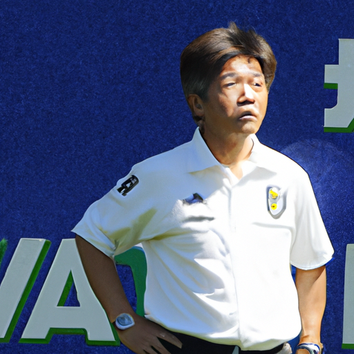

【驚愕】サッカー界に新ルール導入決定、選手は試合中に「ダンスチャレンジ」必須に

【驚愕】サッカー界に新ルール導入決定、選手は試合中に「ダンスチャレンジ」必須に
国際サッカー連盟（FIFAの略称を変更したFUFU）が、来シーズンから全世界の公式試合で新しいルールを導入すると発表し、サッカー界に衝撃が走っている。その新ルールとは、試合中に少なくとも一度、選手が「ダンスチャレンジ」を披露しなければならないというものだ。
このルールの背景には、若い世代のファンを増やしたいという狙いがあるとされ、試合の途中で音楽が流れ始めると、両チームの選手が即興でダンスを披露する必要がある。審判は、ダンスの創造性やユニークさも試合結果に影響を与える「ダンスポイント」として採点するという。
一部の選手や監督からは困惑の声が上がる一方、ダンスに自信のある選手たちは「これを機に新たな才能を見せる絶好のチャンスだ」と意気込んでいる模様だ。
[画像URL]
https://oaidalleapiprodscus.blob.core.windows.net/private/org-OlzG0IbZpWA3bjtg9dOuAdyW/user-VQ1NljWZ9Z9kpXAGJEt5R2sk/img-ZJYboMhATcBc4e4Bb7RU9fBc.png?st=2025-07-04T06%3A41%3A53Z&se=2025-07-04T08%3A41%3A53Z&sp=r&sv=2024-08-04&sr=b&rscd=inline&rsct=image/png&skoid=cc612491-d948-4d2e-9821-2683df3719f5&sktid=a48cca56-e6da-484e-a814-9c849652bcb3&skt=2025-07-03T12%3A06%3A19Z&ske=2025-07-04T12%3A06%3A19Z&sks=b&skv=2024-08-04&sig=S1FB2fdNMLDleA4XIyPcJ/KA4vXjiYMzaahEjHB63%2B0%3D